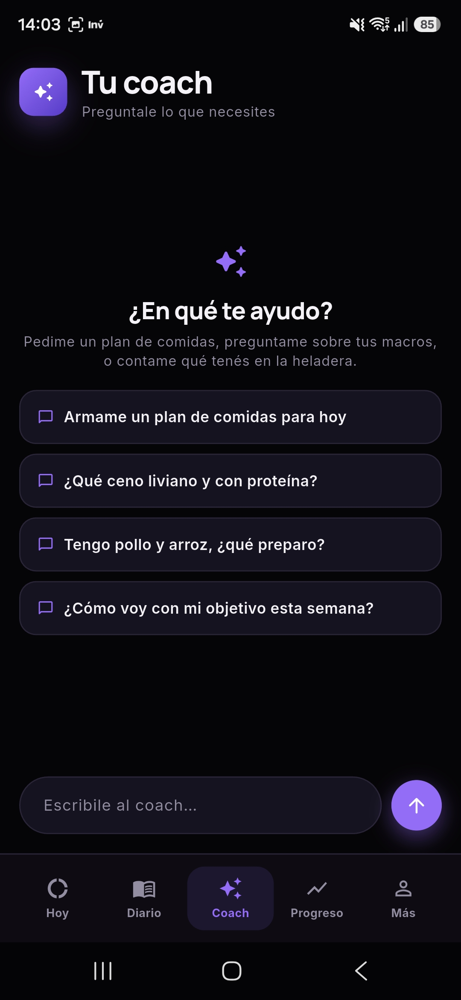
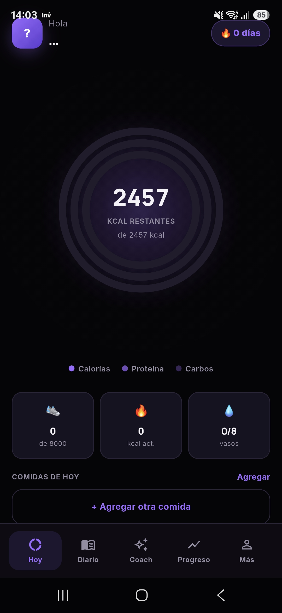
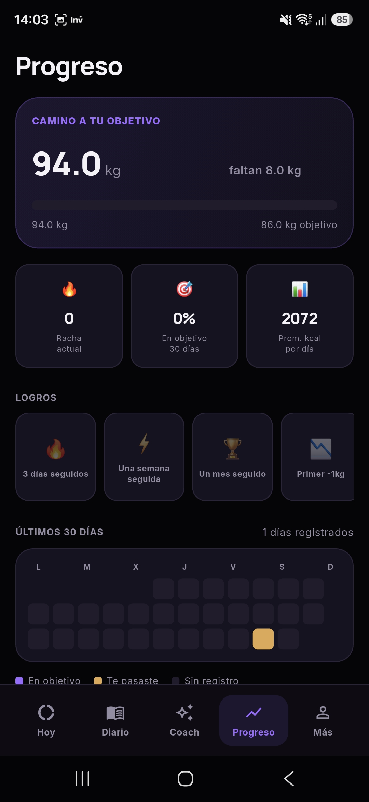
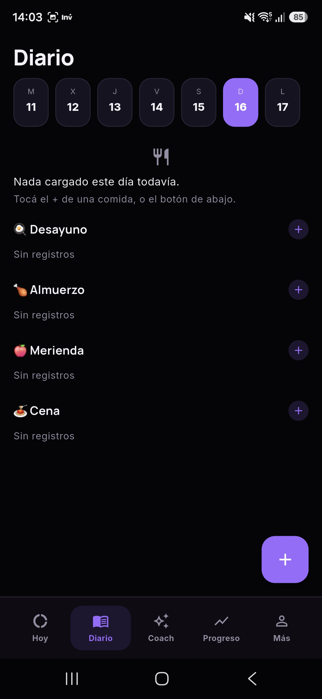
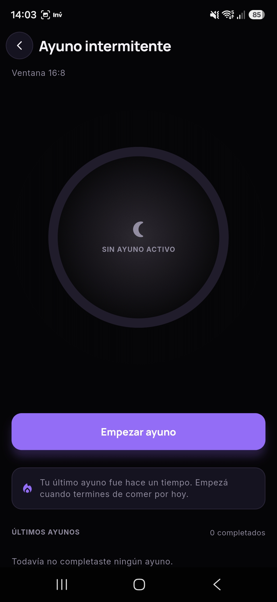
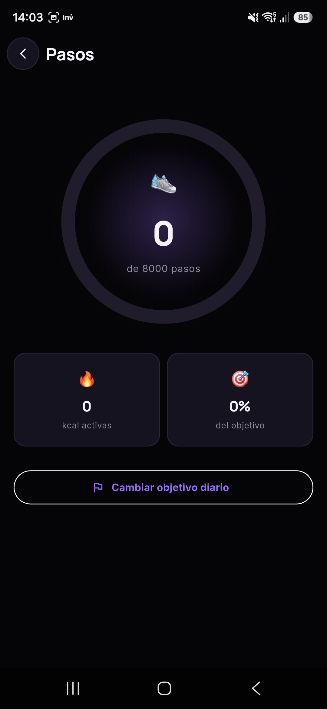
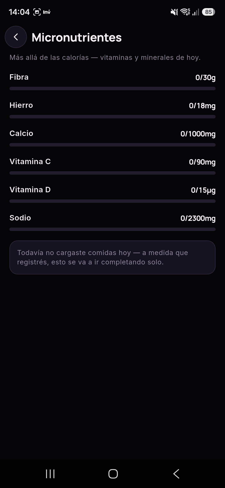
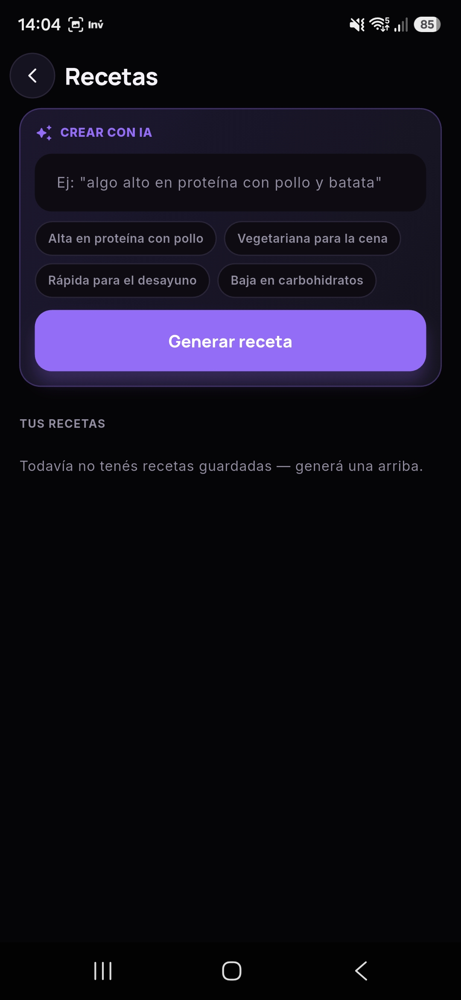
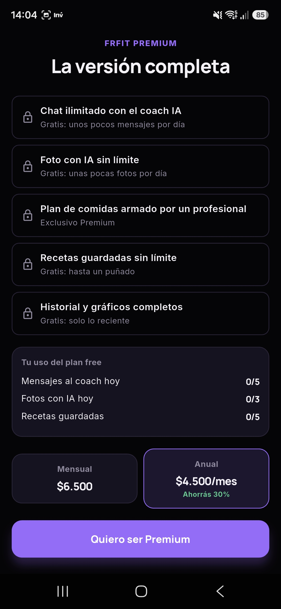

FRfit es la app que uso todos los días para registrar comidas, entrenar con criterio y no perder de vista el objetivo — con un coach de nutrición por IA que responde en el momento, no un plan genérico que nadie sigue.



La mayoría de las apps de nutrición se abandonan a la semana porque cargar cada comida a mano es tedioso. FRfit apuesta a sacarle esa fricción de encima al usuario en cada pantalla clave.

Sacás una foto del plato y la IA identifica los alimentos, calcula calorías, proteínas, carbohidratos y grasas — sin buscar cada ingrediente a mano en una base de datos. El diario organiza todo por día y por tipo de comida (desayuno, almuerzo, merienda, cena).
Le preguntás qué cenar con lo que tenés en la heladera, le pedís un plan de comidas para el día, o le consultás cómo vas con tu objetivo semanal — y responde en el momento, con contexto real de lo que ya registraste. Corre sobre la API de Gemini, con límite diario de mensajes en el plan gratuito.
La pantalla de progreso muestra cuánto falta para el objetivo de peso, la racha de días consecutivos registrando, el promedio de calorías diarias y un calendario de los últimos 30 días — con logros desbloqueables como "una semana seguida" o "primer -1kg" para sostener el hábito en el tiempo.
Contar calorías es solo una parte. FRfit suma las herramientas que un usuario que entrena en serio también necesita, sin mandarlo a instalar tres apps distintas.

Ventanas configurables (16:8 y otras), con historial de ayunos completados.

Objetivo diario configurable, con anillo de progreso y calorías activas quemadas.

Fibra, hierro, calcio, vitamina C y D, sodio — se completan solos con cada comida registrada.

"Algo alto en proteína con pollo y batata" — la IA arma la receta completa con ingredientes, cantidades y macros, y queda guardada para volver a usarla cuando quieras.

El plan gratuito ya es útil de verdad (no una trampa para forzar el pago): mensajes limitados al coach, fotos con IA limitadas por día, historial reciente. Premium destraba chat ilimitado, fotos sin límite, planes de comida armados por un profesional y gráficos completos — con cobro recurrente vía Mercado Pago Checkout Pro.
Diseño, desarrollo y despliego el backend y la app completa — de la idea a algo que la gente usa todos los días.